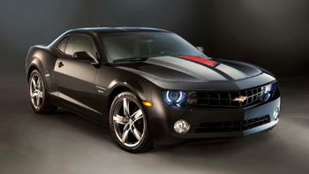
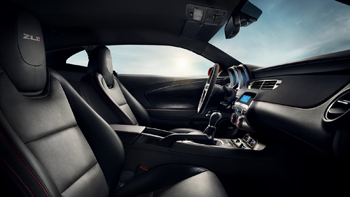
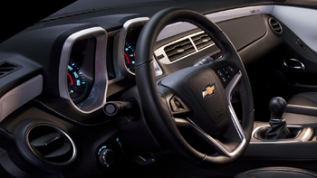

<!DOCTYPE html>
<html lang="en">
<head>
  <meta charset="UTF-8">
  <meta name="viewport" content="width=device-width, initial-scale=1.0">
  <title>Assign07 Part 1</title>
  <script src="../js/jquery-3.5.1.min.js"></script>
  <style type="text/css">
    body { background-color: #eeeeff; }
    div#smallImage { width: 350px; height: 197px; position: absolute; top: 20px; left: 20px; border: 1px solid #000; }
    div#largeImage { width: 350px; height: 302px; position: absolute; top: 20px; left: 420px; border: 1px solid #000; overflow: hidden; }
    div#thumb1 { width: 170px; height: 96px; position: absolute; top: 225px; left: 20px; border: 1px solid #000; }
    div#thumb2 { width: 170px; height: 96px; position: absolute; top: 225px; left: 200px; border: 1px solid #000; }
  </style>
</head>
<body>
  <div id="smallImage"></div>
  <div id="thumb1"></div>
  <div id="thumb2"></div>
  <div id="largeImage"></div>

  <script type="text/javascript">
    $(document).ready(function(e) {
      // Load smallImage
      $('#smallImage').html("");
      // Load  thumb1
      $('#thumb1').html("");
      // Load thumb2
      $('#thumb2').html("");

      // If thumb1 is clicked, move it to smallImage and move smallImage pic to thumb1
      $('#thumb1').click(function() {
        var temp = $('#smallImage').html(); // Get the value currently in smallImage

        $('#smallImage').html($('#thumb1').html()); // Store the value of thumb1 into smallImage
        $('#smallImage').children().width(350); // Set the width of image to 350
        $('#smallImage').children().height(197); // Set the height of image to 197

        $('#thumb1').html(temp); // Store the temp value into thumb1
        $('#thumb1').children().width(170); // Set the width of image to 170
        $('#thumb1').children().height(96); // Set the height of image to 96
      });

      // If thumb2 is clicked, move it to the smallImage and move smallImage pic to thumb2
      $('#thumb2').click(function() {
        var temp = $('#smallImage').html(); // Get the value currently in smallImage

        $('#smallImage').html($('#thumb2').html()); // Store the value of thumb2 into smallImage
        $('#smallImage').children().width(350); // Set the width of image to 350
        $('#smallImage').children().height(197); // Set  the height of image to 197

        $('#thumb2').html(temp); // Store the temp value into thumb2
        $('#thumb2').children().width(170); // Set the width of image to 170
        $('#thumb2').children().height(96); // Set the width of image to 96 
      });

      $('#smallImage').hover(function() {
        $('#largeImage').html($('#smallImage').html())
        $('#largeImage').children().css('position', 'absolute');
        $('#largeImage').children().css('left', '0');
        $('#largeImage').children().css('top', '0');

        var imgLocation = $('#largeImage').children().attr('src');
        var slashLocation = imgLocation.lastIndexOf('/');
        var imgName = imgLocation.substring(slashLocation+1);

        $('#largeImage').children().width(1600);
        $('#largeImage').children().height(900);
        $('#largeImage').children().attr('src', '../zoomImages/' + imgName);
      }, function() {
        $('#largeImage').html("");
      });

      // smallImage size is 350 x 197
      // largeImage size is 1600 x 900
      // top left corner of smallImage is 20, 20
      // top left corner of largeImage is 420, 20
      // difference in size is 21.8% (350 / 1600 = 21.8%)
      // if x coord of cursor is 120, which is 100 inside of the image
      // 100 * 1600 / 350 = 457.14 px
      $('#smallImage').mousemove(function(event) {
        // the result of these two x,y below needs to become the center of largeImage
        // largeImage is 350 x 302 px
        // center of largeImage would be (175 x 151) or 420+175 and 20+151
        xLoc = ((event.pageX-20) * 1600) / 350;
        yLoc = ((event.pageY-20) * 900) / 197;

        // move the largeImage around based on the location of the mouse over the smallImage
        // x axis only
        // first, don't let it scroll off the left
        // second, don't let it scroll off the right
        // third, just match up the adjusted x value with the center of the largeImage div
        if (xLoc < 195)
          $('#largeImage').children().css('left', '0');
        else if (xLoc > 1415)
          $('#largeImage').children().css('left', (-1)*(1250));
        else if (xLoc > 195)
          $('#largeImage').children().css('left', (-1)*(xLoc - 175));

        if (yLoc < 171)
          $('#largeImage').children().css('top', '0');
        else if (yLoc > 750)
          $('#largeImage').children().css('top', (-1)*(598));
        else if (yLoc > 171)
          $('#largeImage').children().css('top', (-1)*(yLoc-151));
      });

    });
  </script>
</body>
</html>